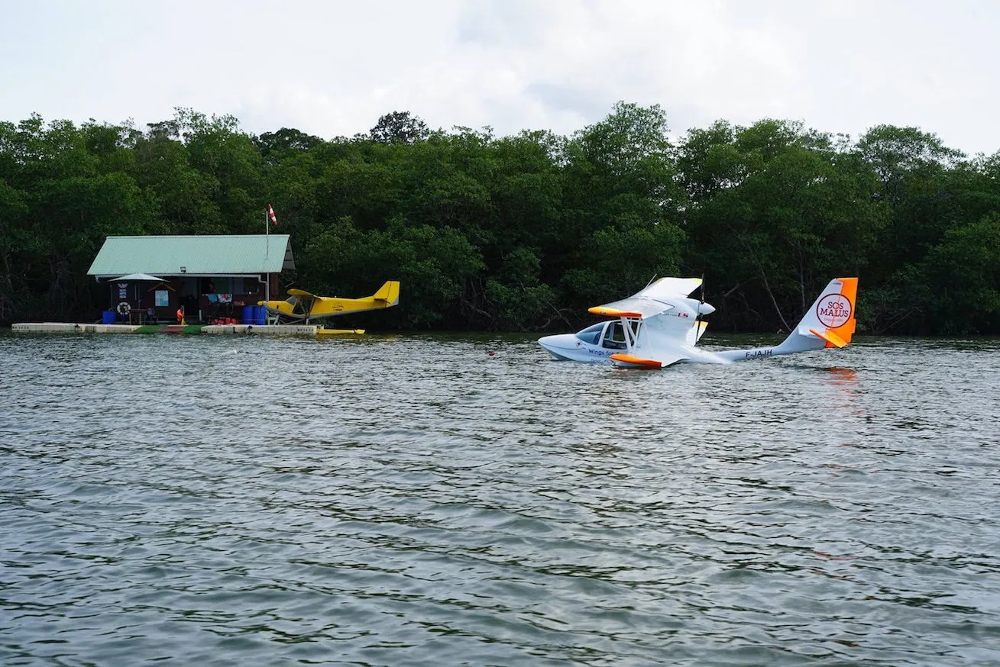
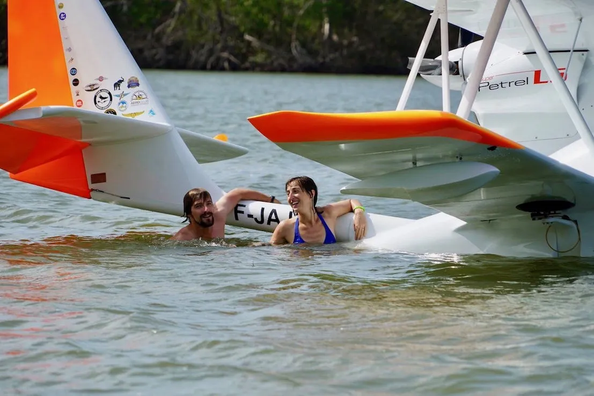
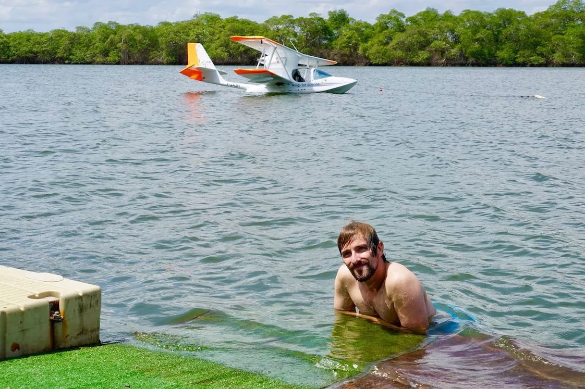
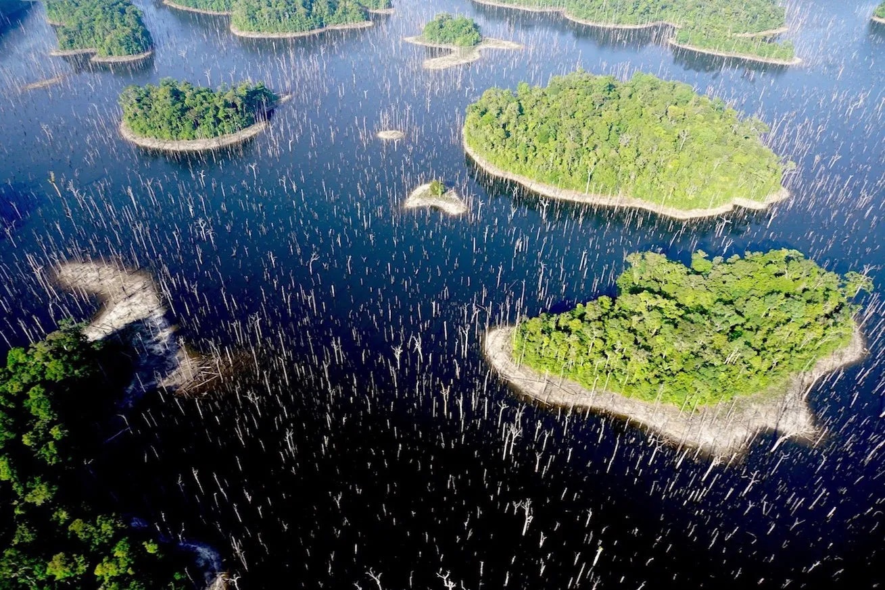
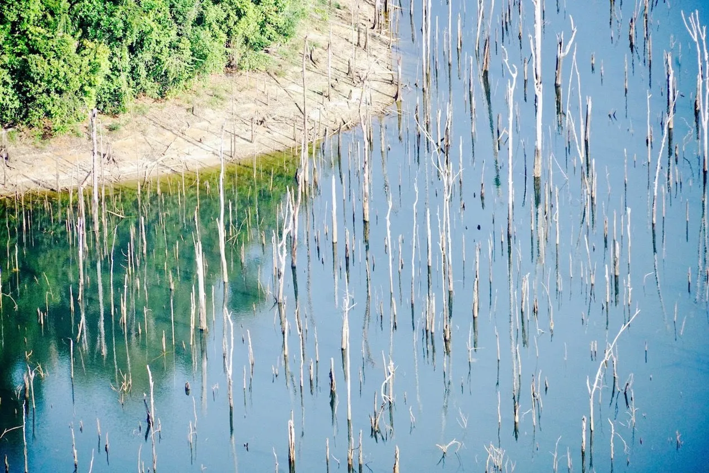

Après la mission au Brésil, direction la Guyane française plus au nord ! A Cayenne nous retrouvons notre amie Dominique rencontrée lors de l'expédition précédente, puis Jeremy de l'Aéroclub de Cayenne-Matoury qui nous présente les autres pilotes, et nous autorise à utiliser leur hangar.
Nous décollons ensuite vers le nord, pour une petite halte sympathique chez Pascal, pilote d'hydravion qui nous accueille sur sa base Les Ailes Hydro de Montsinéry dans l'estuaire du fleuve Sinnamary.

Reprenant notre fleuve, nous restons alors bouche bée devant le lac artificiel de Petit-Saut : imaginez, en 1995 à la place de ce gigantesque lac il y avait une forêt primaire de 310 km2 ! Le Barrage de Petit-Saut qui a été construit en amont produit 50% de toute l'électricité consommée par la Guyane, et n'a laissé de la forêt engloutie que les cimes immergées de milliers d'arbres morts et quelques mornes qui, isolés lors de la mise en eau, forment maintenant des petits îlots de végétation.

Amerris sur le fleuve de la Mana, nous essayons de rejoindre le ponton installé par Marc le pilote de ULM Guyane, mais c'est sans compter le courant ! Yohan avec qui nous avions rendez-vous doit donc nous rejoindre, pendant que Clem maintient notre machine près du bord. Yohan, c'est le conservateur de la Réserve naturelle de l'Amana, qui s'étend sur 148 km carrés et borde l'océan atlantique.

Cette réserve naturelle est composée à l'est d'une zone littorale accessible à pied, qui se compose de plages et de vasières qui, à marée basse, piègent les poissons et attirent alors des oiseaux migrateurs qui, dessinant des vagues noires ou blanches en suspension au dessus de l'eau, décollent en groupe par milliers. Héron, aigrette, ibis rouge, urubu, canards... il y en a tant ! Une équipe d'ornithologues américains s'enfonce dans la boue pour installer un filet, afin de capturer les oiseaux qui s'égareraient pour les étudier, avant de les relâcher. Mais ce soir-là elle fait chou blanc... les oiseaux ont été les plus malins ! Au coucher du soleil, on découvre qu'il n'y a pas que les oiseaux qui ont trouvé ici leur paradis : les moustiques jaillissent eux aussi par milliers !

En s'enfonçant dans les terres, nous atteignons la limite de la zone franchissable : des forêts marécageuses très riches en biodiversité, qui sont d'ailleurs reconnues comme zone humide d'intérêt international (site Ramsar), ponctuées de zones de savane sèche. Mais on ne peut y accéder ni depuis un bateau, ni même à pied avec des bottes, et Yohan possède donc très peu d'informations sur son évolution !
Notre mission est claire : effectuer une cartographie aérienne large de la zone de mangrove afin de la délimiter par rapport à la zone sèche, et photographier les différents types de biotopes rencontrés afin qu'il puisse les distinguer.
Enfin, photographier depuis le ciel tous les éléments étonnants qu'il ne peut pas détecter depuis le sol et qui nous sembleraient « inhabituels ».

A l'issue des survols, nous lui remettons les photos et effectuons le premier bilan temporaire avec lui, et plusieurs éléments l'interpellent :
Tout d'abord la zone de savane sèche, parsemée de feux et de taches d'eau. "Avez-vous vu une végétation particulière sur ces tâches humides ?" Oui effectivement, il y avait des nymphéas...
"Ca c'est intéressant ! Cela signifie que ces points d'eau ne sont pas salés, et abritent donc une faune particulière !"
Ensuite, nous lui expliquons avoir aperçu des drôles de quadrillages en zone humide : "Ah, des champs amérindiens abandonnés !" nous dit Yohan. "Dans le passé, les amérindiens surélevaient des mottes de terre dans ces zones humides afin de les assécher suffisamment, pour que le maïs ou le manioc qu'ils plantaient soit irrigué sans être noyé. Cette technique n'est plus utilisée à l'heure actuelle, mais je ne savais pas qu'elle avait été utilisée dans la réserve".
Yohan est ravi, et nous aussi ! Pour couronner le tout, le réalisateur Jean-Marc était là pour tout filmer... dès qu'on en sait plus sur le documentaire qui va sortir, on vous tient informé bien sûr !